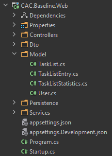
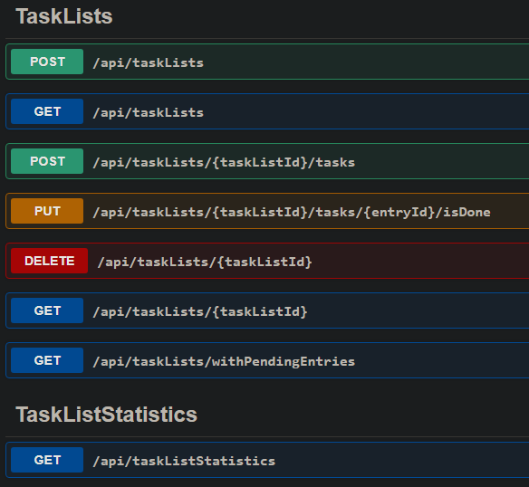
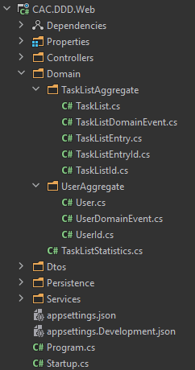
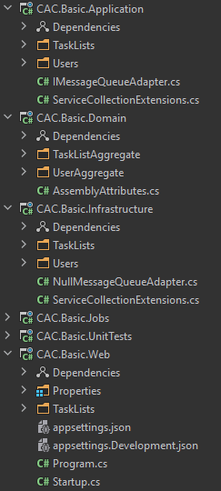
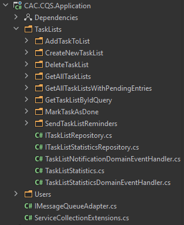
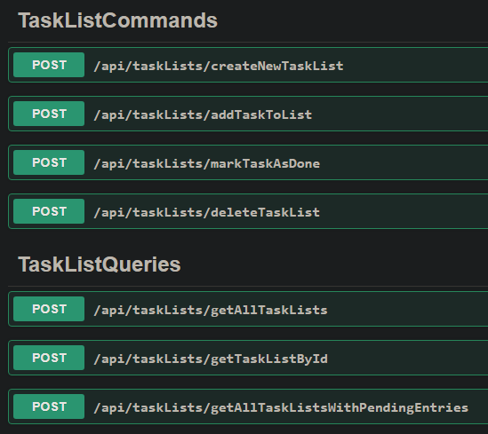

Moving to a clean architecture
Application domain
- there are task lists that are owned by users
- a task list has a name and contains task list entries
- a task list entry has a description and can be marked as done
- there are premium and non-premium users
Business rules
- a task list's name must be unique per owner
- non-premium users are limited to at most one task list with at most 5 entries
Other behaviors
- the system gathers statistics about changes that are made to the task lists it manages
- whenever a task list is created or changed the system publishes a change notification to other systems
in C#
web API
Domain-driven design
- encapsulate business rules in domain objects
- domain events
- persistence on aggregate level
in C#
Motivation for moving to a clean architecture
- new business requirements
- sending reminders to premium users
- reminders for task lists with pending entries every 7 days
how would you implement this in our DDD application?
Clean architecture

Clean architecture
- separate logic from the interfaces to the outside world
- separate business rules from application rules
- depend on abstractions, not concrete implementations
in C#
Domain
- business rules
- everything sync
- no interfaces
Application
- application rules
- contains orchestration logic in services
- validates inputs
- defines abstractions for "communicating with the outside world"
Infrastructure
- implementations of the application abstractions
- persistence, message queues, HTTP clients etc.
Web
- thin layer that wraps application API in HTTP API
Jobs
- thin layer that invokes our application API
Advantages
- re-use same business logic for different application types
- application APIs are simpler to test
- different projects force you to keep the dependency arrows pointed in the right direction
Disadvantages
- often not trivial to distinguish between application and business rules
- what to test? web API? application API? both?
- duplication of validation between web API and application API
Command query separation (CQS)
- often services tend to grow in size uncontrolled
- services are often entity-centric instead of use-case-centric
- read and write operations are mixed, even though their implementations differ heavily
Command query separation (CQS)
- CQS aims to solve these issues by separating read and write operations and centering code around use-cases
- encourages following the open-closed principle
- web APIs become more expressive
- different from CQRS
in C#
web API
in C#
- each command and query has a dedicated handler
- command, query, and response objects can be used as DTOs
- no duplication of validation between web API and application API
- still duplication of cross-cutting concerns (e.g. logging, validation execution, authorization)
MediatR
- well-known library
- supports commands and queries (requests) as well as events (notifications)
- cross-cutting concerns via behaviors
- layer of indirection that makes code difficult to navigate
- no distinction between commands and queries
- behaviors not configurable
Decorators
- use dependency injection to decorate command and query handlers
- code stays obvious and navigable
- allow configuration of cross-cutting concerns through options or attributes
thank you